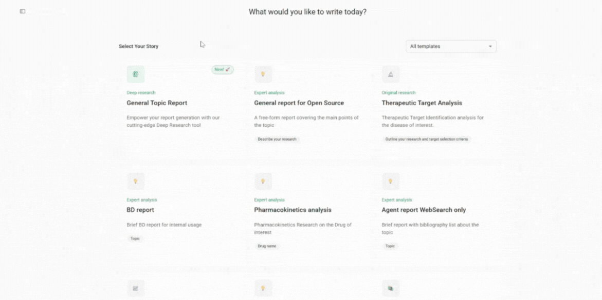

DORA User Manual
Version: 1.0
Last Updated: Dec 30, 2025
💡 Overview
DORA (Document Oriented Research Assistant) is an AI-driven assistant that helps users create structured research outputs, such as review articles, reports, and proposals. The Open Source edition empowers developers, analysts, and researchers to:
-
Build and test custom generation templates
-
Integrate external tools like web search
-
Define document structure and control section logic
-
Use shared memory and inter-section dependencies
📦 Installation
Make sure you also configure environment variables and any necessary API keys for optional tools (e.g., scientific search APIs).
Please refer to the .env.example to create a .env file, filling in your own keys.
🐳 Local Setup Using Docker
To run DORA locally with the web interface:
git clone git@github.com:insilicomedicine/DORA.git
Follow the README for detailed instructions about how to start the services.
🚀 Run Document Generation (in the Web Interface)

1. Navigate to the Template Dashboard
Once logged in, go to your selected template's page.
2. Set Goals and Provide Inputs
Fill out each input field. Be clear and descriptive — avoid abbreviations where possible to improve AI understanding.
3. Upload Custom Data (Optional)
-
Add your own datasets, pre-written paragraphs, selected publications, or key findings to specific sections.
-
Upload PDFs containing source content that DORA can reference during generation for the defined topic.
4. Enable Tools (Optional)
-
For some templates, you can enable Resources/Team of Agents such as Web Search.
-
Toggle tools on/off in the section settings to customize the data sources DORA will use.
5. Review or Edit the Research Plan
-
Before starting, press "Auto-Fill Plan" to explore the document structure.
-
You can customize the plan by adding tasks, changing the order, or removing irrelevant steps.
6. Start Generation
-
Click the "Generate" button in the top-right corner of the document generation page.
-
DORA will process your inputs, template logic, and any enabled tools to begin writing.
-
You will see progress bars for each section as they are being generated.
7. Wait for Completion
- Document generation typically takes 10-20 minutes, depending on complexity and enabled tools.
- Once completed, all sections will become editable.
8. Review Your Draft
- Explore the generated visual summary.
- Read through the generated content and make manual edits.
- Make inline edits or use AI Actions such as Summarize, Extend, or Improve for refinement.
- Add citations or references, utilizing tools such as Web Search.
- Apply AI review in the Review Insights panel.
- Export the document to PDF or Word format.
🚀 Deep research
Purpose
Enable in-depth technical exploration, helping users analyze complex topics, review scientific literature, and generate detailed insights beyond conventional AI chat capabilities.
Setup Instructions
To enable the Deep Research service, follow these steps:
-
Create Azure AI Foundry Project
- Ensure you have created an
o3-deep-researchproject in Azure AI Foundry - The project must be set up in supported regions (West US or Norway East)
- Deploy the required models:
o3-deep-researchandgpt-4o - Connect a Grounding with Bing Search resource
- For detailed setup instructions, refer to: Microsoft Azure AI Foundry Deep Research Documentation
- Ensure you have created an
-
Configure Environment Variables
- Reference the "Azure AI Agent Deep Research" section in
.env.example - Add the corresponding configuration settings to your
.envfile - Ensure all required connection strings and API keys are properly configured
- Reference the "Azure AI Agent Deep Research" section in
-
Enable in Admin Portal
- Navigate to the admin portal
- Locate the "Deep research" template type
- Check the "Is Online" option to activate the template
User Manual:
